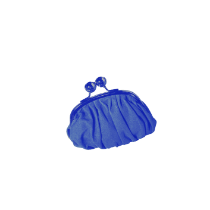
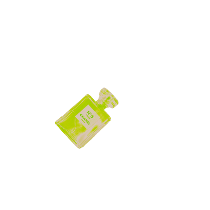
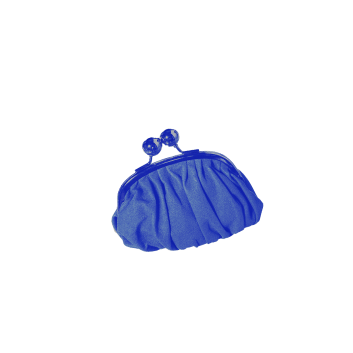
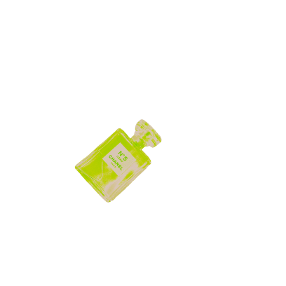
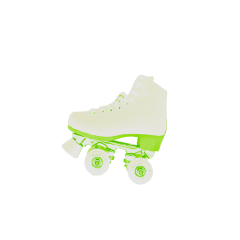
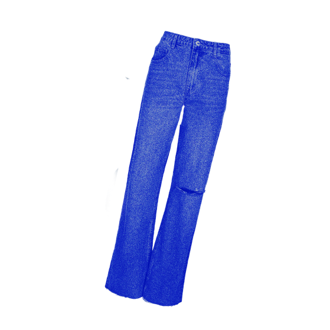
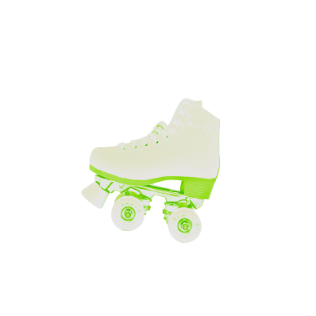
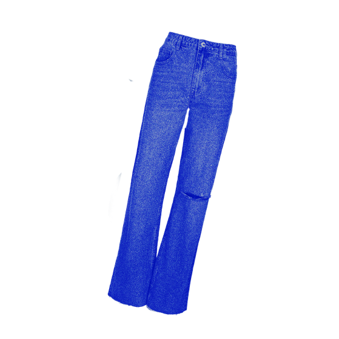
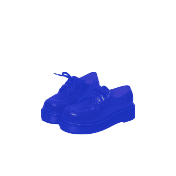
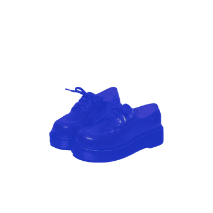

О проекте
Наша миссия помочь людям из разных поколений
лучше понимать друг друга, благодаря изучению
сленга, информации о культовых явлениях
прошлого и прохождению тестов на знание
особенностей разных поколений
Медиа о поколениях — веб-сайт, который помогает
людям из разных поколений лучше понимать друг
друга. Сайт о разных поколениях может служить
не только источником информации, но и местом для
взаимопонимания между разными возрастными
группами, пространством для всех, кто стремится
расширить свой кругозор и открыт новому.

  
    
   
